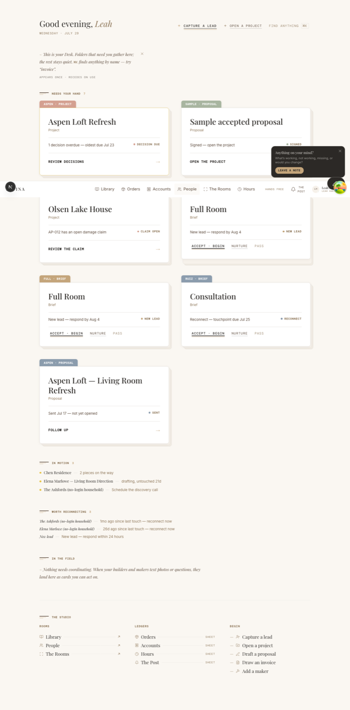
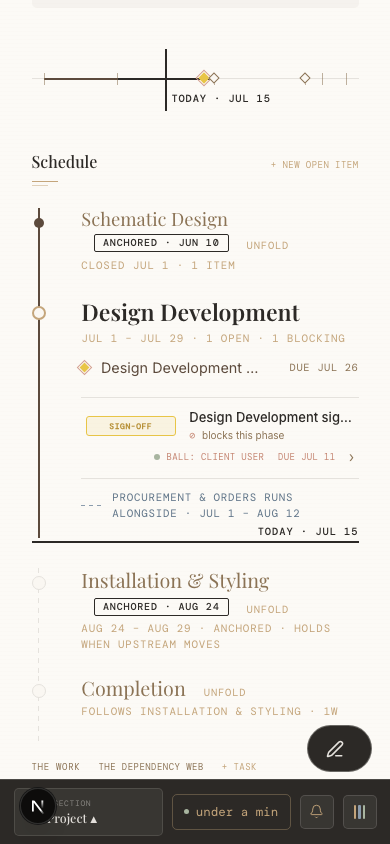

The paper world
Keep the Desk, folios, Rooms, Sheets, spine, and margin. They make the work tangible: projects are held, ledgers are pulled, and settled material folds away.
Designer portal · polish review · one recommended direction
The portal already feels like Patina. Its next pass should be an edit: fewer simultaneous decisions, a protected reading measure, and quiet that responds to context.
01 · What stays
Designers love the portal because it refuses ordinary dashboard furniture. The recommendation preserves that conviction and changes how much of the system asks to be seen at once.
Keep the Desk, folios, Rooms, Sheets, spine, and margin. They make the work tangible: projects are held, ledgers are pulled, and settled material folds away.
Keep Playfair, Inter, and DM Mono. Refine their jobs so serif names the place, sans carries the conversation, and mono records only what behaves like a record.
Keep the July 29 action grammar. Bare verb-object labels, proofreader scores, real 44px targets, and interaction-triggered ink are now canon—not a direction to reopen.
Keep inline errors, minute-resolution time, and restrained motion. The portal should never become a field of banners, badges, toasts, or ambient animation.
02 · Current-state review
The crowding is systemic rather than decorative. The most polished components still compete when rails, drawers, feedback, microcopy, and expanded work regions share the same frame.

At 980px the 200px spine and 232px margin arrive together. After the paper’s own padding, the working measure is roughly 452px.
The Document tree contains 815 explicit type declarations below 12px. Aged Oak reaches about 4.20:1 on Off White; Clay reaches about 2.18:1.
The bottom drawer, log strip, mobile action dock, and feedback layer all have legitimate jobs. Without an ownership rule, they stack instead of taking turns.
| Signal | Observed | Design consequence |
|---|---|---|
| Laptop document | 452px approximate usable paper at the 980px three-column threshold | Protect a 640–720px working measure before docking both rails. |
| Type floor | 815 explicit Document sizes below 12px; 423 are below 10px | Make quiet through spacing and role—not through miniature text. |
| Color as copy | 2.18:1 Clay on Off White; decorative pigments recur in small labels | Use pigment for material; use accessible ink for language. |


03 · Editing rules
These four rules govern every proposal below. They keep useful complexity intact while deciding what deserves the foreground now.
A view may contain many facts, but it names one job and gives that job the clearest verb.
Persistent controls replace one another by context. They do not form a stack of equally urgent shelves.
Clay, Sage, and Terracotta may stain paper and mark state. Readable words use a deeper ink.
Instruction earns space on first contact. Returning designers arrive directly at the active work.
04 · One recommended direction
These are intended to travel together. The first three establish the spatial and typographic floor; the last three apply that floor to the busiest work.
Reserve the full three-column Document for wide displays. From 1180–1439px, use a 56px index spine and an on-demand margin; below 1180px, both rails become sheets. The work keeps at least a 640–720px measure before both rails dock.
Sarah Whitfield · Design · $100,000
On mobile, combine context, the current primary act, and More in one bottom bar. The feedback invitation moves into More or an idle Desk moment; the log offer temporarily replaces the bar’s center instead of stacking above it. At laptop widths, Room labels stay visible while sheet ledgers gather behind one doorway.
Current · three layers can coexist
Quiet · one edge changes with context
Establish a 12px metadata floor, 14px body floor, and 16px form floor. Keep mono for state, time, and provenance; move explanatory copy and navigation back to sans. Add a deeper Quiet Ink for small copy and reserve Clay, Sage, Blue, and Terracotta for rules, washes, large marks, or paired state cues.
Three pieces are moving. The pendant finish needs Sarah’s decision before the order can be placed.
Review the decision13.53:16.3:1+2.18:1Keep Needs Your Hand dominant and cap its first view at 4–6 folios. Fold Open Requests, In Motion, reconnects, and Field into one Studio Pulse with a count and one-line preview. In Compose and Drafting, open only the current or first incomplete facet; completed sections become one-line summaries.
Current · every population continues down the page
1 decision overdue
Signed · open the project
Damage claim open
New lead · respond
Reconnect now
Sent · follow up
Quiet · priority first, the rest folded into one pulse
Review the overdue decision
Open the project
Review the damage claim
Accept, nurture, or pass
Library gets one omnibox that can find a known piece or answer a material question, plus one shelf lens at a time. Capture remains the primary act; Compose and Import live under Add to Library. People groups seven views into Directory, Relationships, and Practice, with a compact current-view selector below desktop.
Bring the 34 intentionally deferred sheet and overlay controls into the Scored Ink grammar. Merge repeated title, introduction, navigation, metrics, and filters into one sheet head. Turn Orders rows into two readable lines, enter bulk mode only on request, and permit one elevated transient surface at a time.
05 · Order of work
The sequence matters. View-specific edits will not hold if the responsive shell, edge ownership, and readable type floor remain unsettled.
Remove the 980–1280px crush zone; define which persistent layer owns each edge at every width.
High impact L effortRaise the size floor, add accessible text inks, and verify real 44px interactive boxes and visible focus.
High impact M effortStage Desk populations, open one active facet, and move secondary document tools behind a named entrance.
High impact M effortConsolidate Library and People entrances, simplify Orders rows, and complete the overlay action grammar.
Med impact M effortMeasure time-to-first-act, rail opens, overflow use, and escape patterns before making the system quieter again.
Guardrail S effort06 · Team feedback
Your choices and notes stay in this browser. Copy the brief when you are ready to share it; this page sends nothing and changes nothing in the product.
Your six reads